Written Standard Operating Procedures (SOP) rarely describe a process in enough detail to reproduce it exactly. Humans and agents fill the gaps, which creates unexpected behavior, especially where verification is weak, as in regulation. In this post we define a regulatory standard procedure, and use continual learning to help a learning agent recover parts of it from an incomplete state.
In six runs the learner recovered routing rules within one rewrite (two of the three to 100%), counting conventions only when it could reason before answering, and sentence rules to 98% acceptance. It also reduced the SOP word count by 43% with a modest performance loss (8 points of exact match) using a non-linear length penalty.
This post was written with the help of Claude Fable 5.1.
Business problem, data, and learning loop
The RegTriage problem
A company’s compliance team reads Federal Register documents and decides whether each applies to the company, what obligation it creates, and what to do depending on the situation. An analyst follows a standard operating procedure (SOP); a senior reviewer corrects the records. The reviewer’s corrections are the only training signal, and the procedure is what should improve. The benchmark reproduces this for Acme Pay, a fictional payments fintech with a bank charter.
Data
37,073 real documents from four CFR titles and nine financial agencies, 2016-09 to 2026-09. The build derives the company’s register and gold records. Splits are chronological: train 17,897 documents, test 11,160, and dev 50 carved out of train, stratified so each hidden rule fires on 10 documents. 305 documents are dropped where the rendered page and the structured fields disagree, so the grader never uses a fact the agent could not read.
Architecture
SOP and rules
sop/v0.md states three rules: relevance (a watched CFR part or agency), class (from the SECTION line), and register action (from the class). The oracle applies three more rules. H1: a correction links to the entry it corrects. H2: a document whose RIN is already tracked is an update. H3: a rule still open for comment is a monitor. sop/v_oracle.md is the full SOP: it states every rule and is scored at the end of each run as the reference.
Both files are procedures an analyst can follow top to bottom. The initial v0.md is 243 words in four steps: decide relevance from the company profile, classify by the SECTION line, set the register action from the class with a null target, submit. The oracle file is the same text plus three steps between classification and submit: Step 4 decides whether the document is a correction (the ACTION line or title says so, or the document number starts with C1-) and links it to the entry it corrects, or leaves the target null when there is none; Step 5 calls query_register with each RIN and turns a tracked rulemaking into an update; Step 6 turns a rule whose DATES text still invites comment into a monitor. Those three steps are what “hidden” means: the agent is graded on them and never reads them.
# Regulatory triage procedure
You are a regulatory analyst at Acme Pay. For each Federal Register document you
are given, produce one triage record. Work through the steps in order, then
submit.
Call `get_document` to read the document. Call `get_company_profile` to see the
CFR parts and the agencies the company watches. Call `submit_triage` once, at
the end.
## Step 1. Decide whether the document is relevant
The document is relevant if either of these is true:
- One of its CFR part lines is inside a watched part range.
- One of its agencies is in the always-watch list.
If neither is true, submit this record and stop:
- `relevant`: false
- `classification`: `not_relevant`
- `register_action`: `none`
- `target_register_id`: null
- `obligation`: null
If it is relevant, set `relevant` to true and go on.
## Step 2. Classify the document
Read the SECTION line and classify by it:
| SECTION | `classification` |
|---|---|
| Rules and Regulations | `new_obligation` |
| Proposed Rules | `monitor` |
| Notices | `informational` |
## Step 3. Say what to do with the register
| `classification` | `register_action` |
|---|---|
| `new_obligation` | `create` |
| `monitor` | `create` |
| `informational` | `none` |
Set `target_register_id` to null.
## Step 4. Say what the company must do
Write one sentence in `obligation` saying what Acme Pay must do about this
document.
## Submit
Call `submit_triage` once with the complete record. That ends the task.# Regulatory triage procedure
CEILING FILE. This is sop/variants/v0-no-h4.md plus the four rules the agent is
normally not told. H4, the text counts, is off in this experiment, so no step
asks for them. It measures the best score this environment allows. Never give it to the
learner.
expert.py reads this file. It is the senior reviewer's copy of the procedure,
and Step 7 is what a submitted obligation sentence is judged against.
You are a regulatory analyst at Acme Pay. For each Federal Register document you
are given, produce one triage record. Work through the steps in order, then
submit.
Call `get_document` to read the document. Call `get_company_profile` to see the
CFR parts and the agencies the company watches. Call `query_register` to look at
work the company already tracks. Call `submit_triage` once, at the end.
## Step 1. Decide whether the document is relevant
The document is relevant if either of these is true:
- One of its CFR part lines is inside a watched part range.
- One of its agencies is in the always-watch list.
If neither is true, submit this record and stop:
- `relevant`: false
- `classification`: `not_relevant`
- `register_action`: `none`
- `target_register_id`: null
- `obligation`: null
This step is absolute. No later step applies to a document that is not relevant.
## Step 2. Classify the document
Read the SECTION line and classify by it:
| SECTION | `classification` |
|---|---|
| Rules and Regulations | `new_obligation` |
| Proposed Rules | `monitor` |
| Notices | `informational` |
## Step 3. Say what to do with the register
| `classification` | `register_action` |
|---|---|
| `new_obligation` | `create` |
| `monitor` | `create` |
| `informational` | `none` |
Set `target_register_id` to null.
## Step 4. Is the document a correction?
A document is a correction if either of these is true:
- Its ACTION line or its title contains the word correction, corrections, or
correcting amendment.
- Its document number starts with `C1-`. A document number `C1-2026-10036`
corrects document `2026-10036`.
If it is a correction, ignore what steps 2 and 3 produced and set:
- `classification`: `correction`
- `register_action`: `link`
- `target_register_id`: the register entry for the document being corrected.
Find that entry in this order, stopping at the first that works:
1. Call `query_register` with the corrected document number — the number after
the `C1-` prefix, or the number named in the text.
2. Call `query_register` with each RIN on the document and take the most recent
entry that comes back.
3. If nothing comes back, leave `target_register_id` null and leave
`register_action` as `link`. Many corrections have no entry to point at,
because a notice never creates one.
A correction is never an update, and it is never a monitor. Skip steps 5 and 6.
## Step 5. Does the document continue an earlier rulemaking?
Call `query_register` with each RIN on the document. If an entry comes back, the
register already tracks this rulemaking — a final rule following an earlier
proposed rule is the usual case. Set:
- `register_action`: `update`
- `target_register_id`: the most recent entry that came back.
Leave `classification` as the earlier steps set it.
## Step 6. Is the rule still open for comment?
Do this only if `classification` is still `new_obligation`. If the DATES text
says the agency is still taking comment, the rule is not settled: what finally
binds the company may not be what this document says today. Set `classification`
to `monitor`.
Leave `register_action` and `target_register_id` as the earlier steps set them.
## Step 7. Say what the company must do
Write one sentence in `obligation`. The sentence must do all of this:
- Name a duty that falls on Acme Pay. A duty the document puts on an agency, on
a court, or on a kind of firm the company is not does not belong here.
- Name a duty the document imposes. Do not write a duty the document does not
state.
- Say what Acme Pay must do, not what the document is. "The rule amends
Regulation E" describes the document. "Acme Pay must disclose the fee before
the customer confirms the transfer" states the duty.
- Carry the condition or the threshold the document puts on the duty, when it
puts one there. If the duty applies only above a dollar amount, or only to one
kind of account, the sentence says so.
- Claim no more than the document requires. A sentence that widens the duty to
transactions or to parties the document leaves out is wrong.
Where the document creates no duty for Acme Pay, write one sentence that says
there is nothing to do and why. A notice is the usual case.
## Submit
Call `submit_triage` once with the complete record. That ends the task.Judge and oracle
The oracle is deterministic python code: it computes the gold record from the structured fields. The judge compares the agent’s record against gold and writes the reviewer’s note in one of three modes, drawn per episode: a reject with a case-specific reason (40%), a silent correction returning the fixed record (40%), or a terse reject naming the wrong fields (20%).
def run_oracle(doc: dict, register: Register, cfg: dict) -> TriageOutput:
# Rule 1. Absolute: no hidden rule runs on a document that is not ours.
if not is_relevant(doc, cfg):
return NOT_RELEVANT.model_copy()
classification = CLASSIFY_BY_TYPE[doc["type"]] # rule 2
out = TriageOutput(
relevant=True,
classification=classification,
register_action="create" if classification != "informational" else "none", # rule 3
target_register_id=None,
)
hidden = cfg["rules"]["hidden"]
correction = hidden["h1_correction"] and is_correction(doc)
if correction: # H1 — classification, action, target
entry = corrected_entry(doc, register)
out = out.model_copy(
update={
"classification": "correction",
"register_action": "link",
"target_register_id": entry.register_id if entry else None,
}
)
if hidden["h2_known_rulemaking"] and not correction: # H2 — action, target
entry = known_rulemaking(doc, register)
if entry:
out = out.model_copy(
update={"register_action": "update", "target_register_id": entry.register_id}
)
if ( # H3 — classification. Gated on the classification H1 may have changed.
hidden["h3_open_for_comment"]
and out.classification == "new_obligation"
and is_open_for_comment(doc)
):
out = out.model_copy(update={"classification": "monitor"})
if hidden["h4_text_stats"]: # H4 — the three counts, on every relevant document
out = out.model_copy(update=text_stats(doc))
return outThe judge names the fault before it writes. It diffs the scored fields, then maps the differences to seven kinds of discrepancy, most specific first: a missed correction, a false correction, a missed update, a missed comment period, a wrong target, a wrong label, wrong counts. A silent correction returns the gold record without the obligation sentence, and a terse reject lists the field names.
Regulatory Agent
claude-sonnet-5, medium effort, four read-only tools (document, company profile, register, submit), max 20 tool calls per episode. It receives the SOP as its system prompt and nothing about the hidden rules.
Learner
claude-opus-5. It reads the current SOP, the agent outputs and the judge and oracle feedback. It never reads the gold record, the rule names, or the metrics. It answers with up to five line edits, which the loop applies to write the next SOP version. What it writes is a forced call to one tool, propose_edits, whose items are replace, insert_after or delete on the original line numbers, each with a one-sentence reason and the episode ids that support it. The loop applies them in order, writes v{n+1}.md, and records the edits, their weights and the cost.
One edit as the learner returned it (run 01, first rewrite): replace on lines 28–36 of v0, reason “Make the analyst classify by the nature of the action line (correction, interim/non-final rule) rather than only the SECTION line.”, text:
## Step 2. Classify the document
Start from the SECTION line, then check the ACTION line and summary, which
override it:
| SECTION | `classification` |
|---|---|
| Rules and Regulations | `new_obligation` |
| Proposed Rules | `monitor` |
| Notices | `informational` |
Overrides, applied in this order:
- If the document corrects, fixes a typographical or technical error in, or
makes a technical amendment to an earlier document (its title or ACTION line
says correction, correcting amendment, technical correction, or the FR number
carries a correction prefix), use `correction`.
- If the rule is not yet settled - an interim final rule, a direct final rule,
a policy statement, or any rule still open for comment - use `monitor`, even
though it appears under Rules and Regulations.The result of that first rewrite in run 01: three edits, 243 words to 436, and exact match from 44% to 88% on the next scoring.
Metrics
Every run reports three numbers, all on the dev split of 50 documents, from run.score:
- Exact match: the share of episodes where all computable fields match gold and, where H5 is on, the sentence was accepted. One wrong field makes the episode wrong. This is the number to read first.
- Field accuracy: partial credit, the share of fields that match over the 50 episodes. Where H5 is on, the expert’s verdict on the sentence counts as an eighth field.
- Per-rule accuracy: for H1, H2 and H3, on the 10 dev documents where that rule fires, the share with the four label fields right. For H4, all three counts right. For H5, the sentence accepted.
Initial loop
Four rounds. Each evaluates the current SOP on dev, runs it on a rotating slice of 50 train documents, and hands those notes to the learner, which writes the next version. The run ends by scoring v4 and the full SOP on dev.
Initial results
Run 01 uses the three rules above. Exact match goes from 44% to 92% in four rounds (94% at v2). H2 and H3 reach 100% at the first rewrite. H1 stays at 60–70%: the failures are corrections with no entry to link to, which the reviewer’s note describes as if one existed (Table 1).
| SOP | exact | field | H1 | H2 | H3 | words | $ round |
|---|---|---|---|---|---|---|---|
| v0 | 44% | 85.7% | 20% | 0% | 0% | 243 | $1.85 |
| v1 | 88% | 97.1% | 60% | 100% | 100% | 436 | $2.52 |
| v2 | 94% | 99.1% | 70% | 100% | 100% | 614 | $2.84 |
| v3 | 90% | 98.3% | 60% | 90% | 100% | 697 | $4.38 |
| v4 | 92% | 97.7% | 70% | 100% | 100% | 903 | $1.36 |
| full SOP | 98% | 99.7% | 90% | 100% | 100% | 798 | $1.30 |
The learner’s v4 SOP recovers the three rules as overrides on the classification step and a lookup on the register step; it is longer than the oracle’s version because it also carries the exceptions single reviewers asked for.
## Step 2. Classify the document
Read the SECTION line and classify by it:
| SECTION | `classification` |
|---|---|
| Rules and Regulations | `new_obligation` |
| Proposed Rules | `monitor` |
| Notices | `informational` |
## Step 3. Say what to do with the register
| `classification` | `register_action` |
|---|---|
| `new_obligation` | `create` |
| `monitor` | `create` |
| `informational` | `none` |
Set `target_register_id` to null.## Step 2. Classify the document
Start from the SECTION line, then check the ACTION line and summary, which
override it:
| SECTION | `classification` |
|---|---|
| Rules and Regulations | `new_obligation` |
| Proposed Rules | `monitor` |
| Notices | `informational` |
Overrides, applied in this order:
- A document whose only purpose is to announce, extend or reopen a comment
period on a rulemaking that is still open, or to correct a document that is
itself still open for comment, stays with the class of the underlying
rulemaking - normally `monitor` - rather than `correction`, unless the
document carries a correction prefix in its FR number.
- A regulatory agenda, plan or similar forward-looking list of rulemakings an
agency expects to consider is `monitor`, whatever section it appears under,
and the rulemakings it lists are tracked, so open or update a register entry
for it rather than leaving it with no action.
- Use `correction` only when the document's sole purpose is to fix or adjust
an earlier document - a typographical, clerical or scrivener's error, an
omitted or wrong amendatory instruction, an extension of a comment period,
or a similar technical fix - and it makes no substantive change of its own.
The title or ACTION line says correction, correcting amendment or technical
correction, or the FR number carries a correction prefix (for example a
leading `C1-`). If the document also does substantive work of its own -
adds or revises regulatory text or commentary, or otherwise stands on its
own - classify it on its substance instead, even when "correction" or
"correcting amendments" appears in the title or ACTION line.
- If the rule is not yet settled - an interim final rule, a direct final rule,
a proposed or procedural rule open for comment, a policy statement,
interpretive rule or other pronouncement issued with a request for comment,
or any rule still open for comment - use `monitor`, even though it appears
under Rules and Regulations and even though it is already applicable or
effective. A final rule is settled when its comment period has closed, even
when it adopts a policy statement, confirms or changes an effective or
compliance date, or repeals a rule: classify it `new_obligation`.
## Step 3. Say what to do with the register
Call `query_register` to see whether the company already tracks this
rulemaking. Treat it as the same rulemaking if the RIN matches, or if the
document amends, extends, finalizes or corrects a document already tracked.
An entry matches only when it covers the same rulemaking; an entry for a
different rule under the same regulation or CFR part is not a match, and a
recurring annual adjustment made under a standing requirement is a fresh
rulemaking unless the register already holds an entry for that same annual
cycle. When the RIN does not match, search again on the subject, the CFR
parts and the agency before concluding it is not tracked: the entry may be
filed under the RIN of another agency in the same interagency rulemaking, or
under none.
| situation | `register_action` | `target_register_id` |
|---|---|---|
| `classification` is `correction` | `link` | the entry for the corrected rulemaking |
| already tracked, any other class | `update` | the existing entry |
| not tracked, `informational` | `none` | null |
| not tracked, any other class | `create` | null |
`target_register_id` must be the register's own entry identifier exactly as
`query_register` returns it. Never put an RIN, an FR document number, a rule
title or a publication date in that field.
A `correction` is always `link`, never `create` and never `none`, even when no
matching entry can be found. Search on the RIN, then on the subject, the CFR
parts and the agency; if a reasonable search turns up no entry identifier,
leave `target_register_id` null rather than inventing one or substituting
another identifier, and stop searching.## Step 4. Is the document a correction?
A document is a correction if either of these is true:
- Its ACTION line or its title contains the word correction, corrections, or
correcting amendment.
- Its document number starts with `C1-`. A document number `C1-2026-10036`
corrects document `2026-10036`.
If it is a correction, ignore what steps 2 and 3 produced and set:
- `classification`: `correction`
- `register_action`: `link`
- `target_register_id`: the register entry for the document being corrected.
Find that entry in this order, stopping at the first that works:
1. Call `query_register` with the corrected document number — the number after
the `C1-` prefix, or the number named in the text.
2. Call `query_register` with each RIN on the document and take the most recent
entry that comes back.
3. If nothing comes back, leave `target_register_id` null and leave
`register_action` as `link`. Many corrections have no entry to point at,
because a notice never creates one.
A correction is never an update, and it is never a monitor. Skip steps 5 and 6.
## Step 5. Does the document continue an earlier rulemaking?
Call `query_register` with each RIN on the document. If an entry comes back, the
register already tracks this rulemaking — a final rule following an earlier
proposed rule is the usual case. Set:
- `register_action`: `update`
- `target_register_id`: the most recent entry that came back.
Leave `classification` as the earlier steps set it.
## Step 6. Is the rule still open for comment?
Do this only if `classification` is still `new_obligation`. If the DATES text
says the agency is still taking comment, the rule is not settled: what finally
binds the company may not be what this document says today. Set `classification`
to `monitor`.
Leave `register_action` and `target_register_id` as the earlier steps set them.Increasing complexity and regularization
Since the hidden SOP rules were relatively easy to learn, we expanded on two different avenues, making new harder tasks and adding constraints to the learning process.
| run | thinking turn | hidden rules | lr | k | questions bought | $ total |
|---|---|---|---|---|---|---|
| 01 | off | H1 H2 H3 | 1.0 | 0 | off | $14.25 |
| 02 | off | H1 H2 H3 H4 | 1.0 | 0 | off | $16.04 |
| 03 | on | H1 H2 H3 H4 | 1.0 | 0 | off | $13.86 |
| 04 | on | H1 H2 H3 H4 H5 | 1.0 | 0 | 3 | $23.60 |
| 05 | on | H1 H2 H3 H4 H5 | 0.5 | 0 | 3 | $23.80 |
| 06 | on | H1 H2 H3 H4 H5 | 1.0 | 0.08 | 4 | $24.12 |
v0.md grows to 311 words with two stated tasks, count the regulation text and write one sentence, and still says nothing about how to count or what a right sentence is; v_oracle.md grows to 970 words and states both.
# Regulatory triage procedure
You are a regulatory analyst at Acme Pay. For each Federal Register document you
are given, produce one triage record. Work through the steps in order, then
submit.
Call `get_document` to read the document. Call `get_company_profile` to see the
CFR parts and the agencies the company watches. Call `run_python` to run code.
Call `submit_triage` once, at the end.
## Step 1. Decide whether the document is relevant
The document is relevant if either of these is true:
- One of its CFR part lines is inside a watched part range.
- One of its agencies is in the always-watch list.
If neither is true, submit this record and stop:
- `relevant`: false
- `classification`: `not_relevant`
- `register_action`: `none`
- `target_register_id`: null
- `word_count`, `unique_word_count`, `long_word_count`: null
- `obligation`: null
If it is relevant, set `relevant` to true and go on.
## Step 2. Classify the document
Read the SECTION line and classify by it:
| SECTION | `classification` |
|---|---|
| Rules and Regulations | `new_obligation` |
| Proposed Rules | `monitor` |
| Notices | `informational` |
## Step 3. Say what to do with the register
| `classification` | `register_action` |
|---|---|
| `new_obligation` | `create` |
| `monitor` | `create` |
| `informational` | `none` |
Set `target_register_id` to null.
## Step 4. Count the document text
Report three counts for the document text you were given:
- `word_count`: how many words it has.
- `unique_word_count`: how many different words it has.
- `long_word_count`: how many of its words are long.
Use `run_python` to compute them. The working directory holds `document.txt`,
which is the same text `get_document` returns.
## Step 5. Say what the company must do
Write one sentence in `obligation` saying what Acme Pay must do about this
document.
## Submit
Call `submit_triage` once with the complete record. That ends the task.# Regulatory triage procedure
CEILING FILE. This is sop/v0.md plus the five rules the agent is normally not
told. It measures the best score this environment allows. Never give it to the
learner.
It is no longer a pure instruction-following ceiling. Step 7 makes the agent
write and run code, so this file also measures tool use, and a perfect score is
not guaranteed.
expert.py reads this file. It is the senior reviewer's copy of the procedure,
and Step 8 is what a submitted obligation sentence is judged against.
You are a regulatory analyst at Acme Pay. For each Federal Register document you
are given, produce one triage record. Work through the steps in order, then
submit.
Call `get_document` to read the document. Call `get_company_profile` to see the
CFR parts and the agencies the company watches. Call `query_register` to look at
work the company already tracks. Call `run_python` to run code. Call
`submit_triage` once, at the end.
## Step 1. Decide whether the document is relevant
The document is relevant if either of these is true:
- One of its CFR part lines is inside a watched part range.
- One of its agencies is in the always-watch list.
If neither is true, submit this record and stop:
- `relevant`: false
- `classification`: `not_relevant`
- `register_action`: `none`
- `target_register_id`: null
- `word_count`, `unique_word_count`, `long_word_count`: null
- `obligation`: null
This step is absolute. No later step applies to a document that is not relevant.
## Step 2. Classify the document
Read the SECTION line and classify by it:
| SECTION | `classification` |
|---|---|
| Rules and Regulations | `new_obligation` |
| Proposed Rules | `monitor` |
| Notices | `informational` |
## Step 3. Say what to do with the register
| `classification` | `register_action` |
|---|---|
| `new_obligation` | `create` |
| `monitor` | `create` |
| `informational` | `none` |
Set `target_register_id` to null.
## Step 4. Is the document a correction?
A document is a correction if either of these is true:
- Its ACTION line or its title contains the word correction, corrections, or
correcting amendment.
- Its document number starts with `C1-`. A document number `C1-2026-10036`
corrects document `2026-10036`.
If it is a correction, ignore what steps 2 and 3 produced and set:
- `classification`: `correction`
- `register_action`: `link`
- `target_register_id`: the register entry for the document being corrected.
Find that entry in this order, stopping at the first that works:
1. Call `query_register` with the corrected document number — the number after
the `C1-` prefix, or the number named in the text.
2. Call `query_register` with each RIN on the document and take the most recent
entry that comes back.
3. If nothing comes back, leave `target_register_id` null and leave
`register_action` as `link`. Many corrections have no entry to point at,
because a notice never creates one.
A correction is never an update, and it is never a monitor. Skip steps 5 and 6.
## Step 5. Does the document continue an earlier rulemaking?
Call `query_register` with each RIN on the document. If an entry comes back, the
register already tracks this rulemaking — a final rule following an earlier
proposed rule is the usual case. Set:
- `register_action`: `update`
- `target_register_id`: the most recent entry that came back.
Leave `classification` as the earlier steps set it.
## Step 6. Is the rule still open for comment?
Do this only if `classification` is still `new_obligation`. If the DATES text
says the agency is still taking comment, the rule is not settled: what finally
binds the company may not be what this document says today. Set `classification`
to `monitor`.
Leave `register_action` and `target_register_id` as the earlier steps set them.
## Step 7. Count the document text
Do this for every relevant document. Call `run_python` and read
`document.txt` from the working directory. That file holds the same text
`get_document` returns.
A word is a run of one or more letters, A to Z or a to z. Nothing else is a
word. A digit is never part of a word, and no punctuation mark is. The line
`12 CFR Part 1026` holds two words, CFR and Part.
- `word_count`: how many words the text holds. Count a repeated word every
time it appears.
- `unique_word_count`: how many different words the text holds. Compare two
words without regard to case, so `The` and `the` are the same word.
- `long_word_count`: how many words have eight letters or more. Count a
repeated word every time it appears.
Leave all three null on a document that is not relevant.
## Step 8. Say what the company must do
Write one sentence in `obligation`. The sentence must do all of this:
- Name a duty that falls on Acme Pay. A duty the document puts on an agency, on
a court, or on a kind of firm the company is not does not belong here.
- Name a duty the document imposes. Do not write a duty the document does not
state.
- Say what Acme Pay must do, not what the document is. "The rule amends
Regulation E" describes the document. "Acme Pay must disclose the fee before
the customer confirms the transfer" states the duty.
- Carry the condition or the threshold the document puts on the duty, when it
puts one there. If the duty applies only above a dollar amount, or only to one
kind of account, the sentence says so.
- Claim no more than the document requires. A sentence that widens the duty to
transactions or to parties the document leaves out is wrong.
Where the document creates no duty for Acme Pay, write one sentence that says
there is nothing to do and why. A notice is the usual case.
## Submit
Call `submit_triage` once with the complete record. That ends the task.A deterministic rule the agent must compute using python (H4)
Description
The SOP asks for three metrics based on document text. Given LLM tokenization, to successfully perform this task the model is asked to write a simple python script and run it with a run_python tool. The incomplete SOP does not say how to do it. H4 fires on every relevant document, so it has its own score and stays out of the H1–H3 accuracies.
The convention is six lines of oracle.py, counted over exactly the text get_document returns:
# H4. A word is a run of letters, so no digit is ever part of one: "12 CFR
# Part 1026" holds two words, CFR and Part. The agent is told to report the
# counts and is told nothing about these three choices.
WORD = re.compile(r"[A-Za-z]+")
LONG_WORD = 8
def text_stats(doc: dict) -> dict:
"""The counts, over exactly the text get_document returns.
Counted over env.render_document's output, which makes that function
gold-bearing: see its docstring.
"""
words = WORD.findall(render_document(doc))
return {
"word_count": len(words),
"unique_word_count": len({w.lower() for w in words}),
"long_word_count": sum(1 for w in words if len(w) >= LONG_WORD),
}Failure
With the counts task activated, v0 scored 0% in the first runs, before the feedback filter, and 20% exact in every run in the tables. In run 02 the learner takes the routing rules to 90 / 100 / 100 and exact match does not move. A vicious circle occurred: the learner drowned on word counting feedback, 40 of its 50 notes rejected the counts, and it wasn’t able to propose successful edits to improve word counting.
Thinking turn
After the initial failure, two decisions were made, one to limit the amount of edits targeted to specific rules, and two to add an additional thinking step. Both decisions will be explored more deeply in the discussion section. For now, since the learner’s first call was a forced propose_edits, we add a switch, --thinking, which makes that turn unforced at 16,000 tokens instead of 8,000.
Results
The run’s result is set by its first counting edit. Run 03 wrote re.findall(r"[A-Za-z]+", text) in its first rewrite: counts right went to 100% at v1 and stayed there, and exact match went 20, 90, 92, 98, 100, equal to the full SOP’s score. Table 3 shows what each learner settled on.
| SOP | what is a word | unique words | long word | matches gold | counts right |
|---|---|---|---|---|---|
| 02 v4 | whitespace tokens, header lines skipped | lower case | more than 7 characters | no | 20% |
| 03 v1 | re.findall(r"[A-Za-z]+") |
ignoring case | more than 7 letters | yes | 100% |
| 04 v4 | re.findall(r"[A-Za-z]+") |
lower case | more than 7 letters | yes | 100% |
| 05 v4 | whitespace tokens with a letter; long words count letters only | lower case | 8 or more letters | no; half applied | 40% |
| 06 v4 | re.findall(r"[A-Za-z]+") |
ignoring case | more than 7 letters | yes | 100% |
The counting step as written, wrong and right:
## Step 4. Count the document text
Report three counts for the document text you were given:
- `word_count`: how many words it has.
- `unique_word_count`: how many different words it has.
- `long_word_count`: how many of its words are long.
Use `run_python` to compute them. The working directory holds `document.txt`,
which is the same text `get_document` returns.## Step 4. Count the document text
Report three counts for the body of the document only. Skip the header lines
that identify the document rather than state its content: the FR document
number, SECTION, PUBLISHED, AGENCY, CFR part and RIN lines. Count the title
and the ACTION, SUMMARY and DATES text, and drop the `ACTION:`, `SUMMARY:`
and `DATES:` labels themselves.
- `word_count`: tokens separated by whitespace.
- `unique_word_count`: how many distinct tokens there are, compared
case-insensitively.
- `long_word_count`: tokens of more than seven characters.
Strip surrounding punctuation from a token before measuring its length,
but keep internal hyphens and apostrophes; a token that is left with no
letters or digits does not count. Apply the same stripping and the same
dropping of tokens with no letters or digits before computing all three
counts, including `word_count` and `unique_word_count`. Always use
`run_python` to compute the three counts on the file itself; never retype or
paste the text into the code, and never estimate the counts by hand. The
working directory holds `document.txt`, which is the same text
`get_document` returns.## Step 4. Count the document text
Use `run_python` to count the text in `document.txt`, which is the same text
`get_document` returns. A word is a run of letters only, as found by
`re.findall(r"[A-Za-z]+", text)`; digits and punctuation are not words.
- `word_count`: how many words it has.
- `unique_word_count`: how many of them differ, ignoring case.
- `long_word_count`: how many are longer than seven letters.## Step 7. Count the document text
Do this for every relevant document. Call `run_python` and read
`document.txt` from the working directory. That file holds the same text
`get_document` returns.
A word is a run of one or more letters, A to Z or a to z. Nothing else is a
word. A digit is never part of a word, and no punctuation mark is. The line
`12 CFR Part 1026` holds two words, CFR and Part.
- `word_count`: how many words the text holds. Count a repeated word every
time it appears.
- `unique_word_count`: how many different words the text holds. Compare two
words without regard to case, so `The` and `the` are the same word.
- `long_word_count`: how many words have eight letters or more. Count a
repeated word every time it appears.
Leave all three null on a document that is not relevant.A rule a model grades (H5)
Description
The record gains one field, a sentence: what Acme Pay must do. There is no deterministic gold sentence. An expert (claude-opus-5 holding the full procedure) reads each one and gives a binary answer. The failure reason, one of six categories, is withheld. The learner may call ask_oracle for one episode and get the category, at a price of one wrong answer against that round, up to five per round.
## Step 8. Say what the company must do
Write one sentence in `obligation`. The sentence must do all of this:
- Name a duty that falls on Acme Pay. A duty the document puts on an agency, on
a court, or on a kind of firm the company is not does not belong here.
- Name a duty the document imposes. Do not write a duty the document does not
state.
- Say what Acme Pay must do, not what the document is. "The rule amends
Regulation E" describes the document. "Acme Pay must disclose the fee before
the customer confirms the transfer" states the duty.
- Carry the condition or the threshold the document puts on the duty, when it
puts one there. If the duty applies only above a dollar amount, or only to one
kind of account, the sentence says so.
- Claim no more than the document requires. A sentence that widens the duty to
transactions or to parties the document leaves out is wrong.
Where the document creates no duty for Acme Pay, write one sentence that says
there is nothing to do and why. A notice is the usual case.The six categories are obligation_missing, not_an_obligation (describes the document instead of stating a duty), wrong_party, overbroad, missing_condition and unsupported. ask_oracle is the only way the learner can read them, and the tool description tells the learner the price: “Costs this round one wrong answer on its score, whether or not the answer turns out to be useful.”
Results
Run 04’s sentence accuracy went 40, 62, 84, 98, 98 across v0 to v4. It bought 3 questions of a possible 20. The learned v3 scores 96% exact against the full SOP’s 86%, which means that the resulting description is equal or better than the pre-written full SOP description.
The learner spent 10 of its 60 questions across the three runs, never more than two in a round, and each answer appears in the edit the learner wrote next. All three runs asked their first question about the same episode, 2018-25398, and got the same answer, overbroad. Table 4 shows run 04’s three questions beside the sentence edit it wrote in the same rewrite.
| run | episode asked about | answer | the edit that followed, in the learner’s words |
|---|---|---|---|
| 04, writing v1 | 2018-25398 | overbroad | Makes the analyst keep the obligation sentence inside what the document itself does, which is what the reviewer accepted. |
| 04, writing v2 | 2021-17560 | wrong party | Makes the analyst identify who the document actually binds and give Acme Pay only a watching action unless the profile shows it in the covered class. |
| 04, writing v4 | 2019-16300 | not an obligation | Makes the analyst state the concrete step a rule requires and stops an option or relief being written as a mandatory duty. |
The sentence step, before and after learning, beside the rubric the expert holds:
## Step 5. Say what the company must do
Write one sentence in `obligation` saying what Acme Pay must do about this
document.## Step 5. Say what the company must do
Write one sentence in `obligation` saying what Acme Pay must do about
this document. First work out which class of institution the document
puts its requirement on -- read the class narrowly, as the document
states it -- and check that class against the company profile. A
charter, a supervising agency or a watched CFR part in common is not
enough: only where the profile affirmatively shows Acme Pay doing the
regulated activity the requirement covers may the sentence tell it to
comply, change a process or meet a compliance date. Read the profile
as widely as the document reads its class: where the profile shows
Acme Pay in that class and carrying on the activity, do not deny a
duty merely because the document names a product, transaction or form
the profile does not list by name. Otherwise name the party the
requirement falls on, give Acme Pay a watching action only -- track
it, or note it and comment if it chooses -- and say the document
places no new duty on Acme Pay.
Keep the sentence inside what this document itself does: name the one
change or event it makes, the action that follows, and its date or
deadline if it gives one. Where the sentence tells Acme Pay to comply,
name the concrete step the document requires -- the filing, notice,
disclosure or process change -- rather than telling it to comply with
the rule at large, and do not turn an option, an election or a relief
the document offers into a required step. Do not reach into related
rules or other
documents, do not assume a charter, business line or affiliate the
profile does not show, and give one action only -- no second step and
no hedged trailing clause such as watching for any effect on the
company or not changing a process beyond monitoring. End the sentence
by saying plainly whether the document places a new duty on Acme Pay.
Match the classification: `monitor` means watch or comment, and
`correction` and `informational` normally mean note it and say that no
new action follows. But where a document -- however routine, annual,
technical or corrective -- changes a dollar threshold, a figure or
wording the company must apply or reproduce in its own disclosures,
notices or forms, say instead that it must update them by the stated
effective date.## Step 8. Say what the company must do
Write one sentence in `obligation`. The sentence must do all of this:
- Name a duty that falls on Acme Pay. A duty the document puts on an agency, on
a court, or on a kind of firm the company is not does not belong here.
- Name a duty the document imposes. Do not write a duty the document does not
state.
- Say what Acme Pay must do, not what the document is. "The rule amends
Regulation E" describes the document. "Acme Pay must disclose the fee before
the customer confirms the transfer" states the duty.
- Carry the condition or the threshold the document puts on the duty, when it
puts one there. If the duty applies only above a dollar amount, or only to one
kind of account, the sentence says so.
- Claim no more than the document requires. A sentence that widens the duty to
transactions or to parties the document leaves out is wrong.
Where the document creates no duty for Acme Pay, write one sentence that says
there is nothing to do and why. A notice is the usual case.A length penalty on the procedure
Description
Exact match alone rewards a longer procedure. The length penalty subtracts k · growth², growth being the proposed SOP’s words over the baseline of 311, minus one. The learner is told what its length costs and what the next 50 words would cost. Run 06 uses k = 0.08.
The change is two functions in run.py and one paragraph in the learner’s prompt. length_growth = max(0, words / baseline − 1) and length_penalty = k · growth², so a procedure half again as long costs k / 4 and one twice as long costs k. The quadratic term idea is to penalize excessively long changes, while having flexibility on smaller changes. The idea is that a new rule has to stop a set of repeated mistakes to pay for itself.
The note run 06’s learner read while rewriting v3 (592 words):
The procedure is scored as its accuracy, a percentage, minus a penalty on its
length. It started at 311 words. It is now 592 words, and that costs 6.53
points -- the same as getting 3.3 of the 50 submissions below wrong. Each word
you add costs more than the last: from here, 50 more words cost 2.53 points,
or 1.3 wrong answers. Words you remove give the points back. That is more than
one wrong answer, so a new rule has to stop 2 repeated mistakes to pay for
itself. If it will not, shorten something else first, or leave it out. Spend
the length on rules and not on restating them.Results
Run 06’s v4 is 603 words: 86% exact, 79.0% penalized. Run 04, the same settings without the penalty, ends at 1,060 words and 94%. Run 06’s last rewrite holds the only delete edit in any run.
The delete edit, on v3 lines 91–93, reason as the learner gave it: “Drops a closing section that repeats the instruction already given with the tool list, shortening the procedure.” The lines it removed:
## Submit
Call `submit_triage` once with the complete record. That ends the task.## Step 5. Say what the company must do
Write one sentence in `obligation` naming what Acme Pay itself does
about this document and nothing wider: no other regulations it
mentions, no register IDs, no advice to file comments.
First decide who the document binds, taking Acme Pay's own business
from the company profile and assuming no charter, licence or status
the profile does not state. Requirements resting on such a status --
banking organization, insured depository institution, holding company,
credit union -- or on a line of business Acme Pay does not run reach
no further than those firms; never write that Acme Pay must do what
they must do. If the duty does reach its business, name the concrete
change and the date it takes effect; a proposal or text not yet in
force is only tracked. Claim nothing the document does not require:
where it changes nothing Acme Pay must do, say so and stop, rather
than adding review, record-keeping or tracking tasks of your own.## Step 5. Say what the company must do
Write one sentence in `obligation` saying what Acme Pay must do about
this document. First work out which class of institution the document
puts its requirement on -- read the class narrowly, as the document
states it -- and check that class against the company profile. A
charter, a supervising agency or a watched CFR part in common is not
enough: only where the profile affirmatively shows Acme Pay doing the
regulated activity the requirement covers may the sentence tell it to
comply, change a process or meet a compliance date. Read the profile
as widely as the document reads its class: where the profile shows
Acme Pay in that class and carrying on the activity, do not deny a
duty merely because the document names a product, transaction or form
the profile does not list by name. Otherwise name the party the
requirement falls on, give Acme Pay a watching action only -- track
it, or note it and comment if it chooses -- and say the document
places no new duty on Acme Pay.
Keep the sentence inside what this document itself does: name the one
change or event it makes, the action that follows, and its date or
deadline if it gives one. Where the sentence tells Acme Pay to comply,
name the concrete step the document requires -- the filing, notice,
disclosure or process change -- rather than telling it to comply with
the rule at large, and do not turn an option, an election or a relief
the document offers into a required step. Do not reach into related
rules or other
documents, do not assume a charter, business line or affiliate the
profile does not show, and give one action only -- no second step and
no hedged trailing clause such as watching for any effect on the
company or not changing a process beyond monitoring. End the sentence
by saying plainly whether the document places a new duty on Acme Pay.
Match the classification: `monitor` means watch or comment, and
`correction` and `informational` normally mean note it and say that no
new action follows. But where a document -- however routine, annual,
technical or corrective -- changes a dollar threshold, a figure or
wording the company must apply or reproduce in its own disclosures,
notices or forms, say instead that it must update them by the stated
effective date.Sampling the learner’s edits
Description
Proposed changes in the first-phase version are absolute, which lacks the gradual improvement present in optimization techniques like gradient descent. Inspired by this need, we use --lr as the share of proposed edits a round applies. Run 05 uses 0.5; every other run applies every edit.
Mechanically, sample_edits gives each proposed edit a weight equal to the number of episode ids it cites (one when it cites none), draws ⌈lr × proposed⌉ of them without replacement with probability proportional to weight, and applies the drawn edits in their original order. Because edits address the original line numbers, dropping one cannot shift the others (Table 5).
| rewrite | proposed | applied | weights (episodes cited per edit) |
|---|---|---|---|
| v1 | 4 | 2 | 16, 16, 11, 8 |
| v2 | 5 | 3 | 8, 7, 6, 2, 2 |
| v3 | 4 | 2 | 3, 8, 9, 1 |
| v4 | 5 | 3 | 5, 4, 3, 11, 2 |
Results
Run 05 applied 2, 3, 2 and 3 of the 4, 5, 4 and 5 edits proposed. H2 and H3 still reach 100% at v1. Exact match ends at 34% and counts right at 40%: its final version counts words on whitespace tokens and long words on letters only.
## Step 4. Count the document text
Report three counts for the document text you were given. Split the text on
whitespace and strip leading and trailing punctuation from each token, then:
- `word_count`: how many tokens contain at least one letter. Tokens that are
all digits or punctuation (numbers, dates, document numbers) are not words.
- `unique_word_count`: how many different words there are, comparing them
lowercased.
- `long_word_count`: how many words have eight or more letters, counting
letters only, so a token mixing digits and letters is rarely long.
Use `run_python` to compute them. The working directory holds `document.txt`,
which is the same text `get_document` returns.## Step 4. Count the document text
Use `run_python` to count the text in `document.txt`, which is the same text
`get_document` returns. A word is a run of letters only, as found by
`re.findall(r"[A-Za-z]+", text)`; digits and punctuation are not words.
- `word_count`: how many words it has.
- `unique_word_count`: how many of them differ, ignoring case.
- `long_word_count`: how many are longer than seven letters.All six runs
Figure 3 shows exact match by round for the six runs; Figure 4 shows the same rounds rule by rule for one run at a time; Table 6 gives the last procedure of each run with field accuracy and the full SOP’s score.

- 01 H1–H3, no thinking turn
- 02 + H4 counts
- 03 + thinking turn
- 04 + H5 sentence
- 05 04 with lr 0.5
- 06 04 with k 0.08
| run | exact | fields | H1 | H2 | H3 | H4 | H5 | full SOP |
|---|---|---|---|---|---|---|---|---|
| 01 · H1–H3, no thinking turn | 92% | 97.7% | 70% | 100% | 100% | off | off | 98% |
| 02 · + H4 counts | 20% | 66.9% | 90% | 100% | 100% | 20% | off | 100% |
| 03 · + thinking turn | 100% | 100.0% | 100% | 100% | 100% | 100% | off | 100% |
| 04 · + H5 sentence | 94% | 99.3% | 80% | 100% | 100% | 100% | 98% | 86% |
| 05 · 04 with lr 0.5 | 34% | 81.2% | 60% | 100% | 100% | 40% | 78% | 82% |
| 06 · 04 with k 0.08 | 86% | 98.2% | 100% | 100% | 100% | 100% | 86% | 82% |
Discussion
Continual learning problem definition
Defining the problem and building the training loop was almost half a day and probably the most important part of the project. Defining the right problem for a continual learning approach, downloading and generating the data, writing complete and partial SOPs, shaping the outputs of the oracle and judge, and building the regulatory and learning agents was a thorough problem with hundreds of details that could doom the process without even starting. Though some changes had to be done during experimentation, having a fixed setup increased the speed of development and experimentation.
Relation between different SOPs tasks and general performance
Despite the simplicity of H4 for humans and Language Models alike, the inclusion of the task reduced performance to zero in the first runs and took some time to fix. The reasons are twofold.
Since our initial hidden tasks were discovered with relative ease, the initial learner was a single model call with required structured response. However, Opus 5 does not think before calling when a tool is forced. On the same prompt, a forced call to propose_edits used 0 thinking tokens and an unforced one used 173. Anthropic’s documentation explains why, specifically Define tools: forcing tool use and Thinking: response prefill and forced tool use. The Define tools page also notes that “testing has shown that this should not reduce performance”; on H4 it did. As a consequence, our learner lacked the reasoning ability to state the simple counting rule the task required. This problem was compounded by the learner focus only on fixing the new H4 problems, which in the first runs meant that simple rules learned in previous episodes were not found anymore. We decided to add a single turn auto tool selection to our learner and to group the feedback based on the specific task it was trying to fix, which helped significantly on the H4 task.
We also saw an interesting change when we enabled the H5 task. Since the learner should be able to choose if it asks a question or not, an additional auto tool step was added, which improved the learner reasoning abilities in other unrelated tasks.
SOP Regularization
It’s encouraging to see the results and metrics for the length penalty experiment, which reached 86% exact match against the unregularized experiment’s 94% with 43% fewer words. Though some of this is format removal, there are significant changes in how the SOPs are represented, as can be seen in the examples above. It was also interesting that this specific approach didn’t present the regression on the H1 task that was visible in the unregularized experiments after multiple iterations.
Open research areas
Here are some interesting ideas that I would love to explore:
- LLM based lr where changes are reduced in scope by another model
- Non-length-based regularization ideas for the proposed SOP
- Multi turn LLM based oracle for harder regulatory tasks like changing controls and policies
- Sub agents and python based tool calling for long documents
- Finetuning Open Source learners with Opus trajectory data
Additional ablations
Given the time and budget I set for this project, only a few iterations were able to be completed, especially since the addition of H5 increased both time and cost. In addition to increasing the sample data and trying different seeds and models, it would be valuable to experiment on the learner sequential shape and different values of k and lr.
Development experience
Here’s a final more subjective note on building it.
Claude Code and Opus
I built this project with Opus 5 and not with Fable 5.1. The main problem with Opus 5 as a coding agent came in the beginning by giving it some of the liberty I tend to have with Fable. As a consequence, the first project draft with Claude had dozens of files and thousands of unnecessary lines of code.
As a result, after starting from scratch, Opus 5 was able to help with the work but with a much more limited decision scope, requiring my help to build specific rules and files, and especially by reducing complexity and keeping the project in a compact and understandable state. Fable 5.1 did help with this blogpost.
Version control and coding agents
After the initial project setup was completed, version control was included to keep track and simplify agentic code review. This was fundamental for iterating while keeping project stability and comparable results. However it brought some negative consequences in the development speed, given how new the project is and how much the ideas proposed affected the same paths of code.
Final thoughts
Reaching expert performance on complex Standard Operating Procedures in the regulatory domain is a difficult task, and there are signs that using process feedback to continually improve the agent’s harness improves performance beyond that a single API call.